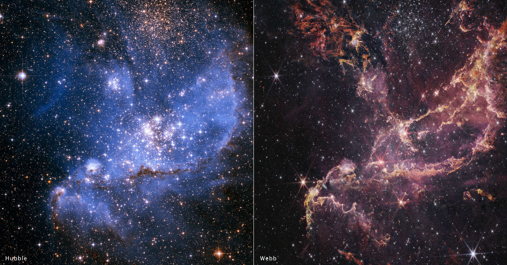
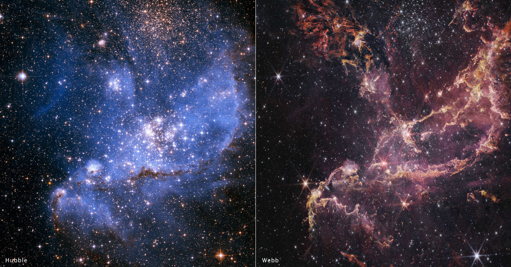

Galeria James Web
El james webb es el telescopio espacial mas avanzado que tenemos cual es su historia y sus mas impresionantes imagenes? aqui las encontraras
La mision principal del james webb es descubrir las galaxias primigenias del universo, una maquina del tiempo viendo al espacio vacio en busca de luz ancestral, galaxias creadas solo 300 millones de años despues del big bang, tambien busca encontrar indicios de vida
Galeria de imagenes
 
